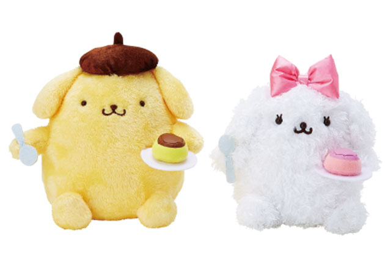

About PomPomPurin 1
こげ茶色のベレー帽がトレードマークの、ゴールデンレトリバーの男のコ。
のんびり屋で、好きな言葉は「おでかけ」、嫌いな言葉は「おるすばん」。
About PomPomPurin 2
くつ集めが趣味。飼い主のお父さんの革ぐつ、お母さんのサンダルなど、片っぽずつ、こっそり隠している。 ミルクと、ふにゃふにゃしたものと、ママが作ったプリンが好き。特技は、お昼寝とプリン体操。 誰とでも仲良くなれちゃうこと。

PomPomPurin 3
将来の夢は、もっともっとおっきくなること。飼い主のお姉さんの家の玄関にあるプリン用バスケットがお家。
誕生日：4月16日のお天気いい日